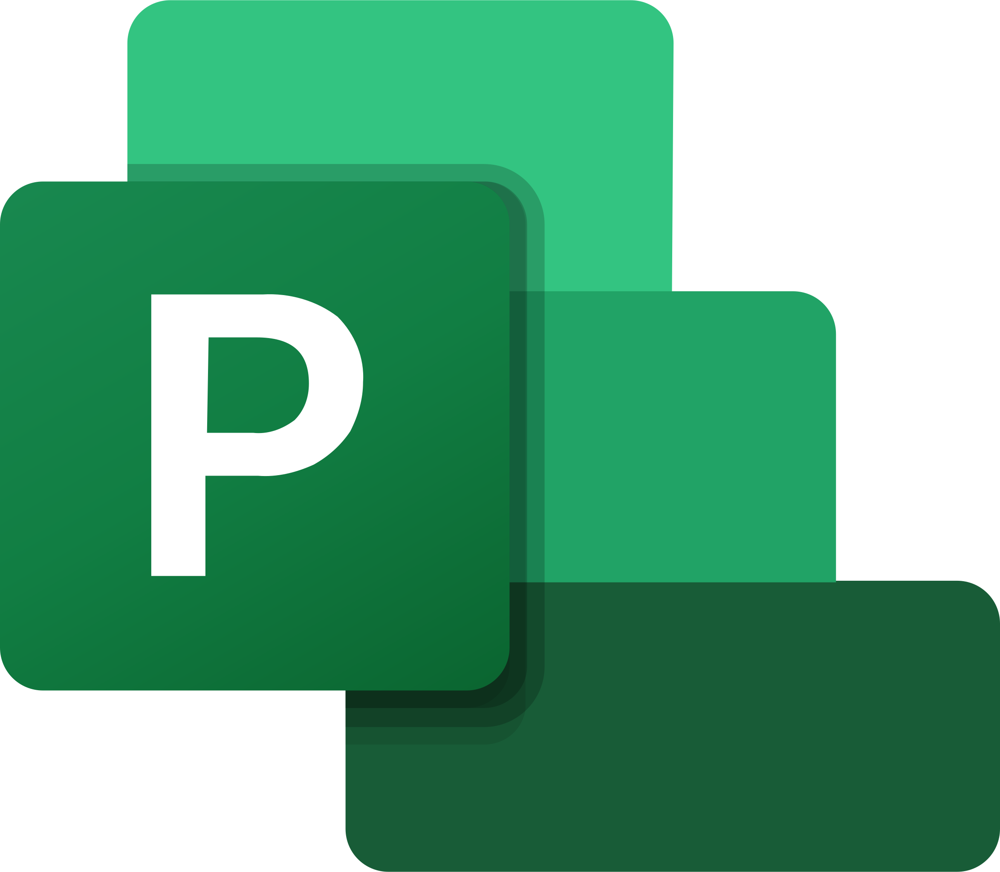

Ferramentas práticas e dinamicas
para você e sua equipe
|  | MICROSOFT PROJECT |
| | O poder de simplificar o gerenciamento de projetos Ferramentas práticas e dinamicas para você e sua equipe |
| Mantenha-se no controle sem esforço Planeje facilmente seus projetos com a força do agendamento dinâmico, baseado no esforço necessário, na duração do projeto e nos membros da equipe designados. |
 |
 | Melhore sua visão e resultados com o business intelligence Crie painéis interativos para visualizar o status geral e abrir os detalhes de seus projetos e programas, usando a visualização do Power BI*. |
| Domine o poder de inovar Crie com facilidade os fluxos de trabalho automatizados e as experiências de área de trabalho ou móveis desejadas. Tudo com uma plataforma flexível e segura criada no Azure, a nuvem corporativa mais confiável do mundo. |
 |
Interface intuitiva
| |  |  |